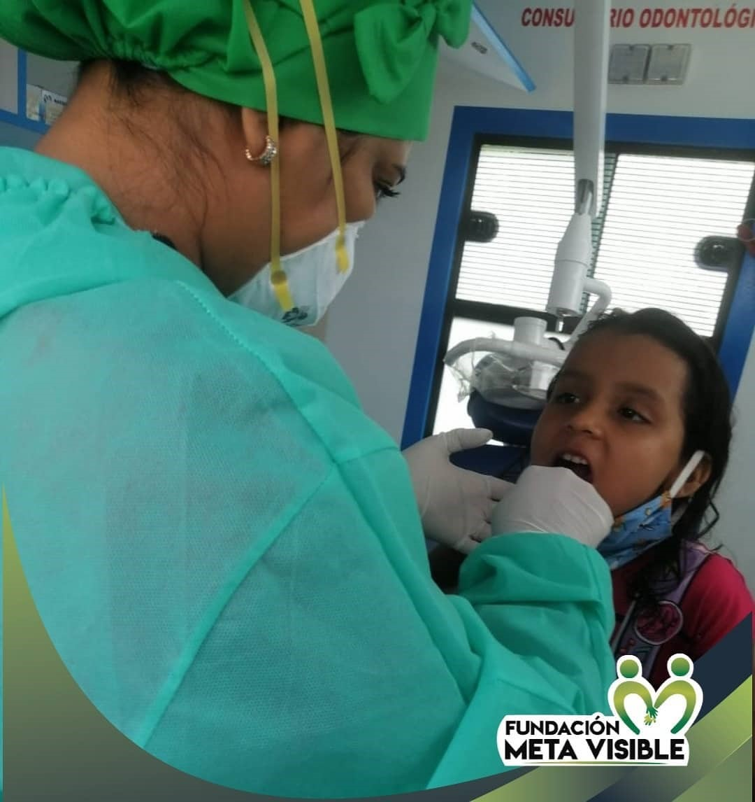

Belleza

CASAI
La CORPORACIÓN PARA LA CAPACITACIÓN DE SALUD INTEGRAL "CASAI",
es una institución de formación para el trabajo y desarrollo humano,
que forma en ciencias de salud, con un alto sentido ético, humano y pedagógico,
capaces de orientar, asistir y participar en el cuidado integral del paciente y su familia.
Desarrollando prácticas que promueva la salud y prevenga la enfermedad en el área comunitaria,
clínica y empresarial; actuando con éxito en el campo laboral de la salud, a través de un equipo
humano profesional comprometido y competente.
Factura